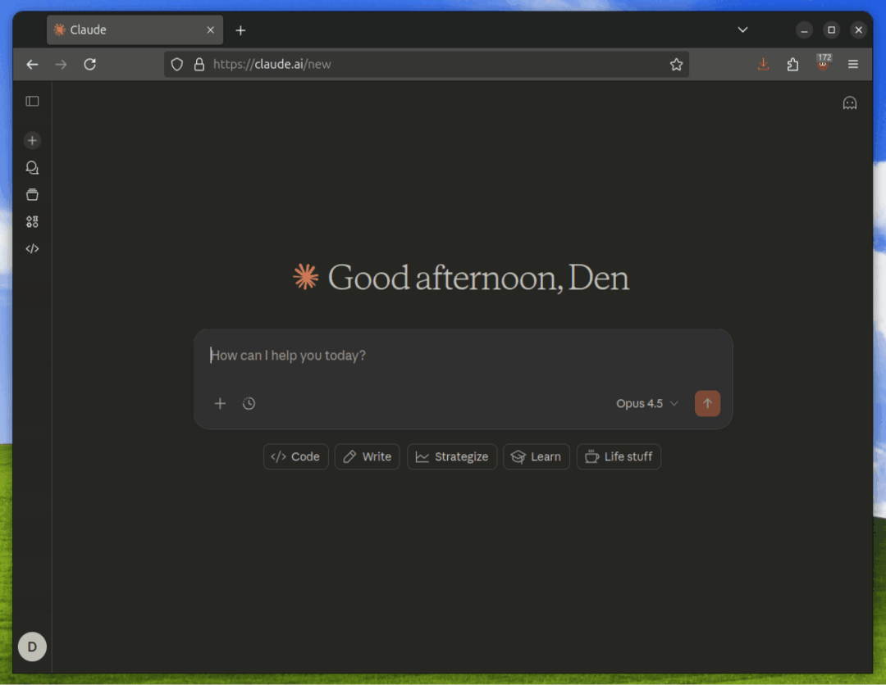

Study group guide · Chapter 2 Work in progress
A Map of Modern Agent Systems
Instruction files, MCP, and Skills
Work in progress
This chapter is still being developed and reviewed. Its explanations, examples, and visuals may change before the chapter is ready for publication.
Chapter 1 explained a minimal agentic system: an LLM can propose tool calls, surrounding software executes them, and the loop carries results into later model calls. Modern products add several ways to make that system fit a project. This chapter focuses on three: instruction files, MCP, and Skills.
Imagine asking a coding agent to update the Week 3 page in this study-group repository, verify every external reference, and explain what changed. The minimal loop can inspect files, call tools, observe results, and continue. Three practical questions remain:
- How does it learn the durable rules of this repository?
- How can it connect to an approved external system in a reusable way?
- How can it follow a repeatable chapter-review method without loading that entire method into every task?
| Mechanism | Primary job | A useful question |
|---|---|---|
| Instruction file | Durable guidance for a project or path. | “What rules apply while I work here?” |
| MCP | A shared connection protocol for external capabilities and information. | “How can this host connect to that provider?” |
| Skill | A reusable method with instructions and optional supporting resources. | “How should this kind of task be carried out?” |
This is a teaching map, not a universal product taxonomy. The three mechanisms can work together, but none is a required stage of the Chapter 1 loop. OpenAI and Anthropic place them beside other features, while their filenames, discovery rules, activation behavior, and interfaces remain product-specific. OpenAI: Customization; Anthropic: Extend Claude Code
1. Instruction files
Why persistent project guidance appeared
A user request explains the current task. A repository also has guidance that should survive across tasks: where content belongs, which commands validate a change, what style the team follows, and which decisions remain with a human. Repeating those rules in every request is fragile. An instruction file gives a compatible host a known place to discover them. Keeping that guidance beside the work also lets a team review and version it with the project instead of relying on one person's chat history.
The file itself is ordinary text or Markdown. Its filename and
location become operational only because a host has implemented a
loader for them. Committing AGENTS.md or
CLAUDE.md does not make every agent read it, and the
model cannot follow guidance that the host never places in active
context.
AGENTS.md is an open convention for repository guidance.
The format deliberately uses ordinary Markdown with no required
fields and encourages nested files near the work they govern. That
gives tools a predictable place to look without defining one
universal loading algorithm.
AGENTS.md: Official format site
What belongs in an instruction file?
The official AGENTS.md site describes the file as a
README for agents: a predictable place for knowledge that a new
teammate or coding agent would repeatedly need. Useful content can
include a project overview; build, test, lint, and deployment
commands; code-style and testing guidance; security considerations;
pull-request or commit requirements; large-dataset handling; and
repository-specific gotchas.
AGENTS.md: Official format site
Those examples are suggestions, not a mandatory schema. The governing principle is simpler: put durable, frequently relevant guidance in instruction files. Prefer knowledge that applies across many tasks and can be stated clearly enough for a teammate to review.
| Good candidates | Poor candidates |
|---|---|
| Project purpose, important directories, and architecture or ownership boundaries. | A temporary goal that belongs only to one request. |
| Concrete build, test, lint, deployment, and data-handling commands. | Secrets, credentials, private tokens, or sensitive local data. |
| Style, security, testing, pull-request, and commit requirements that recur. | A complete reference manual or every specialized procedure the project may ever use. |
| Short repository gotchas and pointers to deeper documentation or Skills. | A long reusable method that is better packaged as an on-demand Skill. |
From a file on disk to active guidance
A useful way to understand instruction systems is to follow the loader rather than the filename. A typical run has seven steps:
- Locate the work. The host identifies a project root, working directory, or file path that anchors discovery.
- Search known locations. It checks the user, organization, project, ancestor, nested, local, managed, override, or fallback locations that its product supports.
- Select applicable files. Files outside the active path or scope are ignored, deferred, or conditionally loaded.
- Compose guidance. The host concatenates, imports, or otherwise combines the applicable text.
- Resolve conflicts. Ordering, specificity, an override filename, or another product rule decides which guidance has the stronger effect.
- Place it in context. The selected content becomes instructions or context visible to the model.
- Use it during the task. The model interprets the guidance while planning and acting; enforcement still requires tools, permissions, hooks, tests, or human review.
The first and last steps look similar across products. The middle steps are where implementations diverge, so a claim such as “the closest file wins” is safe only when the relevant host documents that behavior.
A repository walkthrough
study-group/
├── AGENTS.md
├── book/
│ ├── AGENTS.md
│ └── modern-agent-systems/
│ └── index.html
├── frontend/
│ └── AGENTS.md
└── backend/
└── AGENTS.md
The root file might explain the repository's purpose, shared
validation commands, ownership boundaries, and rules that apply to
every change. The book/AGENTS.md file can add book-only
requirements: read the whole chapter before editing, preserve stable
URLs, cite factual claims, and check responsive tables.
While editing book/modern-agent-systems/index.html, a
compatible path-based loader can combine the root guidance with the
closer book guidance. The frontend and backend files govern sibling
subtrees, so their build commands and architecture rules should not
become part of this chapter edit merely because those files exist.
Whether a closer file augments, overrides, or simply appears later
than broader guidance remains a host-specific rule.
How Codex builds its instruction chain
Codex builds this chain when a run starts; in the TUI, that normally means once per launched session. It performs global discovery, project discovery, and merging as distinct steps. OpenAI: Custom instructions with AGENTS.md
Global scope
Codex first checks its home directory, which defaults to
~/.codex and can be changed with
CODEX_HOME. At this level it reads
AGENTS.override.md when that file exists; otherwise it
reads AGENTS.md. It uses only the first non-empty
applicable file. This is the place for one user's defaults across
repositories, while an override can temporarily replace the normal
global file.
Project scope
Codex then starts at the project root—typically the Git root—and walks down to the current working directory. If it cannot identify a project root, it checks only the current directory. In every directory on that path it tries, in order:
AGENTS.override.md;AGENTS.md;- any names configured in
project_doc_fallback_filenames.
It includes at most one instruction file per directory and skips empty files. Fallback names are therefore compatibility choices made in Codex configuration, not filenames every Codex installation recognizes automatically.
Merge order and practical precedence
Codex concatenates the selected files from the broadest project scope toward the current directory, separating them with blank lines. Closer guidance appears later in the combined prompt and therefore has practical precedence when instructions conflict. Changing the launch directory can change which nested files belong to the chain.
For the repository tree above, a run launched from
study-group/book/modern-agent-systems/ can combine:
- the applicable global file under the active Codex home;
study-group/AGENTS.md;study-group/book/AGENTS.md.
It does not walk sideways into frontend/ or
backend/, so those sibling instructions do not govern
the chapter edit.
Claude Code's richer native system
Claude Code has its own instruction system rather than treating
CLAUDE.md as a spelling variant of
AGENTS.md. Its documented order runs from broader
managed and user guidance toward project and local guidance.
Anthropic: How Claude remembers your project
| Scope | Location | Purpose and sharing |
|---|---|---|
| Managed policy | System-wide Claude Code location | IT- or DevOps-controlled organization standards, security policy, and compliance guidance shared across users. |
| User instructions | ~/.claude/CLAUDE.md |
One person's style and tooling preferences across that person's projects. |
| Project instructions | ./CLAUDE.md or ./.claude/CLAUDE.md |
Team-shared architecture, standards, and workflows, normally committed to source control. |
| Local instructions | ./CLAUDE.local.md |
Personal project-specific preferences such as sandbox URLs or test data, normally ignored by version control. |
View managed-policy locations
- macOS:
/Library/Application Support/ClaudeCode/CLAUDE.md - Linux and WSL:
/etc/claude-code/CLAUDE.md - Windows:
C:\Program Files\ClaudeCode\CLAUDE.md
These locations are product-specific deployment points for organization policy, not portable repository conventions.
Claude loads CLAUDE.md and
CLAUDE.local.md files on the ancestor path at launch,
ordered from the filesystem root toward the working directory.
Nested files below that directory load later when Claude reads files
in their subdirectories. A CLAUDE.md can also import
other files with @path, while
.claude/rules/ provides a more modular rule system.
These composition and lazy-loading behaviors belong to Claude
Code's loader.
Path-specific rules: similar job, separate mechanisms
Some guidance is durable but relevant only to certain files. Path-specific rules occupy a useful middle ground: narrower than an always-loaded project file, but still persistent and automatically selected by a compatible host.
Claude Code rules
Claude Code can split instructions into Markdown files under
.claude/rules/. A rule can include
paths frontmatter so it loads only when Claude works
with matching files. This keeps, for example, API or frontend
guidance out of context until it is relevant. Rules without a path
condition load unconditionally. This is still Claude Code's own
loading system, not an AGENTS.md standard.
Anthropic: How Claude remembers your project
GitHub Copilot path-specific instructions
GitHub uses a different mechanism. A repository creates files whose
names end in .instructions.md under
.github/instructions/; optional subdirectories can
organize them. Frontmatter supplies an applyTo glob,
and excludeAgent can exclude either Copilot code review
or the Copilot cloud agent from applying that file. On GitHub.com,
current path-specific support is limited to those two agents.
GitHub: Adding repository custom instructions
---
applyTo: "**/*.ts,**/*.tsx"
---
Use the shared TypeScript style rules.
Run the relevant type checks after editing.
Representative patterns include **/*.py for Python
files anywhere, src/**/*.py for Python files under one
tree, and **/*.ts,**/*.tsx for two TypeScript
extensions. Claude path-scoped rules and GitHub path-specific
instructions solve a similar context-selection problem, but they
use separate frontmatter, locations, loaders, and product support.
Neither mechanism is a universal cross-product standard.
Writing effective instructions
Instruction files enter model context; they are not hard-enforced configuration. Specific, concise, well-structured guidance is more likely to be followed, while permissions, hooks, tests, and review remain necessary when a rule must be enforced. Anthropic: How Claude remembers your project
Keep always-loaded guidance concise
Anthropic recommends targeting fewer than roughly 200 lines per
CLAUDE.md. That is Claude Code writing guidance, not a
universal AGENTS.md limit and not Codex's separate
32 KiB discovery cap. Longer always-loaded files consume context,
bury important instructions, and may reduce adherence.
When a file grows, move narrow guidance into path-scoped rules and
reusable procedures into Skills. Imports can make a large
CLAUDE.md easier to maintain, but imported content
still enters context when the parent file loads.
Use clear structure
Prefer short Markdown sections, descriptive headings, and bullets that group related instructions. Dense, unstructured paragraphs make both human review and model attention harder.
Be specific and verifiable
Use 2-space indentation
is testable;Format code properly
is not.Run
names the expected check;npm testbefore committingTest your changes
does not.API handlers live in
routes work;src/api/handlers/Keep files organized
does not.
Remove conflicts and stale rules
Review root, nested, user, managed, local, and path-scoped guidance together. Contradictory instructions create ambiguity, and stale rules can be worse than missing rules. In a monorepo, use the product's scoping or exclusion controls so unrelated teams' guidance does not enter the task merely because it exists.
A complete example
The official AGENTS.md site provides the following
sample. It demonstrates useful content; it is not a required
template or schema.
AGENTS.md: Official format site
View a sample AGENTS.md
# Sample AGENTS.md file
## Dev environment tips
- Use `pnpm dlx turbo run where <project_name>` to jump to a package instead of scanning with `ls`.
- Run `pnpm install --filter <project_name>` to add the package to your workspace so Vite, ESLint, and TypeScript can see it.
- Use `pnpm create vite@latest <project_name> -- --template react-ts` to spin up a new React + Vite package with TypeScript checks ready.
- Check the `name` field inside each package's `package.json` to confirm the right name—skip the top-level one.
## Testing instructions
- Find the CI plan in the `.github/workflows` folder.
- Run `pnpm turbo run test --filter <project_name>` to run every check defined for that package.
- From the package root you can call `pnpm test`.
- The commit should pass all tests before you merge.
- To focus on one step, add the Vitest pattern: `pnpm vitest run -t "<test name>"`.
- Fix any test or type errors until the whole suite is green.
- After moving files or changing imports, run `pnpm lint --filter <project_name>` so ESLint and TypeScript checks still pass.
- Add or update tests for the code you change, even if nobody asked.
## PR instructions
- Title format: `[<project_name>] <Title>`
- Always run `pnpm lint` and `pnpm test` before committing.The example works because it uses concrete commands, clear sections, verifiable expectations, and project-specific knowledge. It does not rely on vague encouragement such as “be careful” or “write good code.”
Portable content, different loaders
| System | Typical files | Loading behavior to remember |
|---|---|---|
| Open convention | AGENTS.md |
Defines a readable repository convention and broad nesting model; it does not force every product to load files identically. |
| OpenAI Codex | AGENTS.md, AGENTS.override.md, configured fallbacks |
Builds a chain from global guidance and the project root down to the working directory, with closer files later in the combined prompt. |
| Claude Code | CLAUDE.md, CLAUDE.local.md, .claude/rules/ |
Uses an additive hierarchy, imports, lazy nested files, path-scoped rules, and managed locations. CLAUDE.md is a native system, not merely a renamed AGENTS.md. |
| GitHub Copilot | .github/copilot-instructions.md, path-specific instruction files, and supported agent-instruction filenames |
Supports repository-wide and path-specific instructions with product-specific precedence and feature coverage. |
Claude Code reads CLAUDE.md, not
AGENTS.md directly. A repository that wants one shared
source can import @AGENTS.md from
CLAUDE.md, keeping Claude-specific guidance below the
import, or use a symbolic link when no additions are needed. These
choices make the content portable; they do not make the loaders
identical. Claude still controls when the import and any nested
guidance enter context, while Codex follows its own discovery chain.
Anthropic: How Claude remembers your project
What this section is not covering: memory
Where instruction files stop and Skills begin
Instruction files fit durable guidance that should be broadly present. Path-specific rules narrow that guidance to relevant files. Skills fit reusable, task-specific procedures that need not occupy every session. An instruction file can preserve a short invariant and route the agent to a Skill without copying the whole method into always-loaded context.
Instruction files keep durable guidance close to the work. The next mechanism solves a different problem: connecting the agentic system to external capabilities through a shared protocol.
2. Model Context Protocol (MCP)
Why MCP exists: a tool definition is not an integration
Why not simply define the same tool again for every agent? Because a tool definition describes an operation, but it is only one part of connecting an application to a provider. Without a shared protocol, every application still needs its own way to connect, discover available operations, serialize requests, return results and errors, handle local or remote communication, carry authorization or connection metadata, and stay compatible as the provider changes.
MCP avoids requiring every agent application and every external system to build and maintain a unique pairwise integration. A provider can expose its capabilities through one MCP server, while multiple compatible hosts connect through their MCP clients. Host-specific policy and server implementation work remain; the shared boundary reduces duplicated adapter work. Anthropic introduced MCP in November 2024 to address this fragmented integration problem. Anthropic: Introducing MCP
The USB-C analogy
The Hugging Face MCP Course uses USB-C as a useful analogy. A laptop does not need a newly invented connector for every keyboard, storage drive, monitor, or phone. Those devices still do different things, but they meet through a shared connection standard. MCP plays a similar role for AI applications and external capability providers. Hugging Face MCP Course: Key Concepts and Terminology
The analogy stops at the connection boundary. MCP does not make every server identical, decide which capabilities are trusted, grant approval, or determine what an agent should do next.
Without MCP: the M×N integration problem
Suppose an ecosystem has M AI applications and N external systems. If every application needs a custom adapter for every provider, the ecosystem may require up to M × N pairwise integrations. Each pair can repeat connection, discovery, message-shaping, error, authentication, and compatibility work.
With MCP: a shared client–server boundary
With MCP, each application implements the client side of the shared protocol and each provider implements the server side. The course describes this as moving conceptually toward M + N implementations. That is an architectural simplification, not a literal cost guarantee: hosts still differ, servers still wrap real systems, and feature support can vary.
Without MCP: pairwise adapters

With MCP: a shared boundary

MCP is not an agent, an LLM, a tool, or the Chapter 1 agentic loop. It does not decide which goal to pursue, and an MCP connection does not automatically expose every server capability to the model. The host still decides what its application will expose and how returned information enters the broader workflow.
Host, client, and server
MCP uses three participant roles. The host is the user-facing AI application; a client is the protocol component inside that host; and a server exposes capabilities from an underlying program, API, dataset, or service. These roles describe responsibility, not three separate agents. Hugging Face MCP Course: Architectural Components; MCP: Architecture overview, 2026-07-28
| Participant | Responsibility | Not automatically responsible for |
|---|---|---|
| Host | The user-facing coding agent, AI-enabled editor, desktop assistant, or custom application. It receives the request, coordinates model calls and MCP clients, applies policy, and integrates results into the workflow. | The protocol itself; MCP does not control the host's full agentic loop. |
| Client | A component inside the host that communicates with one server, handles MCP messages and transport details, discovers support, sends requests, and receives results. | Another agent or the user-facing application. |
| Server | A local program or remote service that wraps existing functions, APIs, data, or services; advertises capabilities; handles requests; and returns results or errors. | Necessarily a remote machine. A filesystem server can run locally through stdio. |
One host can connect to several servers, normally by creating one dedicated client for each server. That 1:1 client–server relationship isolates protocol communication while the host coordinates the wider user and model experience.
What the protocol standardizes
MCP is easier to understand as a small stack. Participants tell us who communicates. The transport layer carries messages. The data layer defines what those messages mean. Primitives define the useful capabilities that servers can expose. Discovery and notifications let implementations learn and track what is available. Hugging Face MCP Course: The Communication Protocol; MCP: Architecture overview, 2026-07-28
| Part | Question it answers | Current beginner-level contents |
|---|---|---|
| Participants | Who is communicating? | Host, one client per connected server, and local or remote servers. |
| Transport layer | How do messages travel? | Stdio for local process communication; Streamable HTTP for remote communication. |
| Data layer | What do messages mean? | JSON-RPC-based requests, responses, errors, notifications, version and capability information, and primitive-specific methods. |
| Server primitives | What useful capability can a server provide? | Tools, Resources, and Prompts. |
| Utility behavior | How does the connection stay usable as support changes? | Discovery, dynamic lists, version and capability information, and optional change notifications. |
Separating the two layers lets the same data-layer concepts travel over different channels. A local filesystem server can communicate through standard input and output, while a remote issue-tracker server can use Streamable HTTP; both can expose the same kinds of protocol primitives. Detailed 2026 stateless request mechanics stay in the later frontier subsection.
What a server can expose
The three core server primitives are related, but they are not interchangeable. The Hugging Face course supplies the accessible teaching structure; the current official architecture verifies Tools, Resources, and Prompts as the three core primitives that servers expose. A host may support only a subset and decides how each primitive appears in its user and model experience. Hugging Face MCP Course: Understanding MCP Capabilities; MCP: Architecture overview, 2026-07-28
Tools: operations
A Tool is an executable function that may perform an action or retrieve computed data. The server advertises it with structured arguments; the host decides whether to list it, filter it, require approval, and make it model-invocable. A Tool supplies an operation, not permission to run it in every situation. Ask: “What can this server do for me?”
Resources: contextual information
A Resource is data or content the application can read, such as a file, schema, record, documentation page, or API response. Resources are commonly identified through URIs. The host decides whether and how that information enters model context; the label does not by itself guarantee safety. Ask: “What information can this server give me?”
Prompts: reusable interaction templates
A Prompt is a reusable template supplied by the server. It may contain instructions, examples, or structured messages and is commonly surfaced for user or host selection. Ask: “What reusable interaction template does this server offer?” An MCP Prompt is not an Agent Skill: it does not by itself package a folder of procedural instructions, scripts, references, and assets.
All three primitives are discoverable and can change over time. The protocol also supports notifications so a subscribed client can learn that a server's available capabilities changed. MCP: Architecture overview, 2026-07-28

A complete connection walkthrough
Suppose the Week 3 update needs issue data from an approved remote system. A simplified end-to-end run looks like this:
- Configure or discover the server. The application receives an approved local command, remote URL, connector, or registry-derived configuration.
- Create one client for that server. The host keeps the connection and protocol exchange isolated from its other servers.
- Establish the transport. It starts the local process or opens the authenticated remote channel.
- Discover protocol support. The client may query what the server supports; current requests also carry the applicable version, identity, and capability metadata.
- List primitives. The client discovers the tools, resources, or prompts the server currently advertises.
- Apply host policy. The application filters the catalog, checks trust and permissions, and selects what the user or model may access.
- Expose relevant definitions. When tools are involved, the host gives the model only the definitions needed for this run.
- Propose a call. Inside the Chapter 1 loop, the model chooses one exposed tool and supplies arguments.
- Route the request. The host sends the tool call through the matching client to the server.
- Execute or retrieve. The server performs the operation against the external system and creates a result or error.
- Return and select context. The result reaches the host, which decides what to display, store, summarize, or place in the next model call.
- Continue the loop. The model observes that selected result, then acts again or stops.
One host implementation: OpenAI's Responses API
OpenAI's current implementation shows how much policy sits above
the protocol. An application supplies a remote server URL or a
supported connector. OpenAI imports the server's tool list, and the
application can restrict that list with allowed_tools
before the model sees it. Tool calls produce explicit MCP output
items, including arguments, results, and errors.
OpenAI: MCP and Connectors
The same implementation can request approval before data is shared with a remote server, or relax approval for selected trusted tools. OAuth access tokens authorize remote systems, but authentication does not make a server's instructions or returned content safe. Filtering, approval, logging, and prompt-injection defenses remain host-side responsibilities. These are OpenAI API choices, not new definitions of the MCP protocol.
| Tool | MCP |
|---|---|
| Describes an operation the model can request. | Defines how a host and external provider connect, discover capabilities, and exchange messages. |
| May be built into the host, local code, or exposed through another integration. | May carry tools, but also resources, prompts, and extension capabilities. |
| Does not imply MCP. | Does not imply that every server capability is exposed to the model at once. |
When MCP earns its complexity
MCP is useful when an external capability provider should work with several compatible hosts, when a host should connect to many local or remote providers through one integration model, or when dynamic discovery matters. A provider can implement a reusable server once; hosts can reuse the protocol client boundary instead of maintaining a bespoke adapter for every pairing.
It can also support ecosystem discovery and packaging: metadata can describe how a server is installed or reached, and different hosts can decide whether to expose its tools, resources, or prompts. This interoperability is valuable only if the protocol boundary is a real requirement.
MCP may be unnecessary for one local function, one built-in host capability, or a small private integration tightly coupled to one application. A direct function call is often clearer when there is no need for remote transport, dynamic discovery, or reuse across hosts. MCP is an integration option, not a maturity badge.
What MCP does not solve
Interoperability does not determine whether a server is trustworthy, which actions require approval, or how authentication, prompt injection, authorization, data governance, context selection, execution safety, model judgment, and stopping are handled. Those responsibilities remain with the host, application policy, execution environment, and human reviewers.
MCP's evolving frontier
Stateless MCP
Earlier remote MCP flows required initialization and a server-side session identifier that later requests had to carry. That created lifecycle, storage, recovery, and routing work for clients and servers. In the 2026-07-28 protocol, every request instead carries its protocol version and relevant capabilities, and a mandatory discovery exchange advertises what the server supports. The server can interpret each request without a protocol-level session. MCP: Architecture overview; Simon Willison: Stateless MCP
Stateless does not mean “nothing stays open” or “applications have no state.” A Streamable HTTP connection or notification stream can remain open, and a task can still use explicit application or domain state. The narrower change is that request interpretation no longer depends on a hidden protocol session. That removes a sticky-routing requirement and makes horizontally scaled remote services easier to build. This operational simplification is why Simon Willison called the release a renewed reason to take MCP seriously.
Code execution with MCP
Direct tool calling works well for a small relevant catalog: the model sees a tool definition, proposes a call, and receives the result. At larger scales, eagerly loading many schemas and sending every intermediate result through the model can waste context. A code-execution pattern instead lets the model write a bounded program that discovers selected operations, composes several calls, filters or joins results, and returns only the useful subset.
// Definitions are discovered only for the two operations needed.
const rows = await issues.list({ label: "week-3" });
const broken = [];
for (const row of rows) {
const status = await links.check({ url: row.reference });
if (!status.ok) broken.push({ id: row.id, url: row.reference });
}
// Only the reduced result returns to model context.
return broken;The loops, joins, conditionals, and intermediate values stay inside the execution environment rather than forcing the model to copy every row between tool calls. The model can receive the final broken link set instead of a large issue catalog plus every check result. This is an architectural pattern layered around MCP, not part of the protocol. It also introduces requirements for sandboxing, resource limits, monitoring, and safe data handling. Anthropic: Code execution with MCP
MCP Apps
MCP Apps is an official extension that lets a tool return an interactive interface to a supporting client. A form, dashboard, chart, or multi-step control can appear inside the conversation instead of reducing every interaction to text or raw JSON. It is an extension, not part of the minimal core protocol. MCP Apps: Bringing UI capabilities to MCP clients
A supporting host fetches the declared UI resource and renders it in a sandboxed interface. User actions can call server tools or update model context through structured messages. That makes dashboards, document viewers, configuration wizards, and forms possible while keeping the host responsible for sandboxing, consent, and what the model is allowed to observe.

In the demonstration, an MCP tool returns an interactive color picker inside the conversation. The user changes the color and sends the selected value back through the interface.
The official MCP Registry
Early MCP use often meant copying a command or remote URL into a host's JSON configuration by hand. The official Registry addresses the next problem: publishing standardized metadata about public servers so discovery and installation information can travel across an ecosystem. Maintainers publish server identity, versions, package or remote locations, and configuration metadata to one upstream repository. MCP: Official Registry
The official Registry is designed primarily as an unopinionated metadata source for downstream registries, marketplaces, and aggregators; host applications can consume those downstream experiences. It is currently in preview, and discovery is not a safety endorsement. Namespace verification helps establish who published metadata, while package scanners and downstream services remain responsible for deeper code and security review.

3. Skills
Why tools were not enough
A capable agent may have a filesystem, a browser, shell commands, and external connections and still perform a specialized task inconsistently. Capability answers “what can the system do?” It does not supply a team's preferred method, reference material, templates, or deterministic helpers. Repeating a full playbook in every prompt is unreliable, while loading every possible playbook into permanent instructions consumes context. Building a separate bespoke agent for each workflow makes reuse and maintenance equally difficult.
Anthropic introduced Agent Skills in October 2025 as composable folders for domain procedures, then published the format as an open standard for cross-platform portability in December 2025. The goal was to let a general agent acquire a recognizable method when needed instead of turning every method into permanent context or a separate agent. Anthropic: Equipping agents for the real world with Agent Skills
The portable package and its activation are different things. A folder can follow the open format, but a compatible client still decides where to discover it, what metadata to expose, when to load it, which files or scripts the agent may access, and how a user can invoke it. The package supplies a method, not one atomic action. It can coordinate ordinary tools or MCP-backed capabilities. Agent Skills: Overview
Anatomy of a Skill
At minimum, a Skill folder contains SKILL.md. Supporting
directories are optional, but they let the author separate the core
method from deep knowledge, deterministic operations, and reusable
output materials.
documentation-review/
├── SKILL.md # trigger description and core procedure
├── references/
│ ├── source-policy.md # approved source and citation rules
│ └── review-rubric.md # checks for scope, claims, and pedagogy
├── scripts/
│ └── check-links.py # deterministic link validation
└── assets/
└── review-note.md # reusable review template
SKILL.md: metadata and the core method
SKILL.md begins with compact metadata, including at
least a name and description in the open format. The description is
part of the activation interface: it tells a client or model which
requests should make the Skill relevant. The Markdown body then
states the procedure, expected inputs and outputs, decision points,
boundaries, and when supporting files should be used.
references/: deep knowledge on demand
References hold policies, schemas, examples, rubrics, and detailed
domain knowledge that would make the core method too long. The
documentation-review Skill can read source-policy.md
only while checking citations and review-rubric.md only
during final review.
scripts/: deterministic operations
Scripts are appropriate when a repeated operation should run the same way every time: checking links, transforming files, extracting structured data, or validating an artifact. The agent executes code instead of spending tokens simulating the algorithm. Scripts also create a concrete artifact that people can inspect and test.
assets/: reusable inputs and output materials
Assets can hold templates, starter files, examples, style
resources, or files the workflow copies and transforms. Here,
review-note.md defines the final reporting structure
without forcing that template into the Skill's permanent metadata.
Anthropic: Equipping agents for the real world with Agent Skills;
Agent Skills: Overview
Discovery and activation
A Skill cannot help merely by existing somewhere on disk. A compatible client must first discover it and present enough metadata for the task to match. A typical activation path is:
- Discover folders. The client scans its supported project, user, managed, bundled, or installed Skill locations.
- Read compact metadata. It extracts names, descriptions, and any supported host extensions without loading every procedure.
- Expose the catalog. The client places that compact index in model context or uses it in its own selection interface.
- Match the task. A clear description and recognizable trigger cues make a relevant Skill easier to select.
- Activate implicitly or explicitly. The model or host may choose the Skill, or the user may name it directly.
- Load the method. The full
SKILL.mdenters context. - Access supporting material later. The workflow opens references, runs scripts, or uses assets only when a step calls for them.
Implicit activation is convenient but probabilistic: a vague description, a very large catalog, or a task that resembles several Skills can produce a miss. Explicit invocation is more reliable and useful for debugging, but it asks the user to know which Skill to choose. Products expose different commands and policy controls for these two paths. OpenAI: Build Skills; Claude Code: Extend Claude with Skills
Progressive disclosure
A Skill can keep a large body of procedural knowledge available without loading every file into every model call. The common three-level explanation is:
- Metadata keeps the catalog cheap. A compatible client exposes a short name and description so the model can recognize when the Skill may be relevant without reading every method.
- Core instructions provide the selected procedure. The full
SKILL.mdloads only after activation. - Supporting resources preserve optional depth. References, scripts, templates, and other files stay outside model context until the method calls for them; a script may execute without its source ever becoming prompt text.
Progressive disclosure separates files that are available from information that is currently model-visible. That makes a larger catalog possible: many descriptions can remain cheap, one selected procedure can become active, and deep material can stay retrievable without paying its prompt cost on unrelated tasks. Exact discovery, activation, invocation, context budgets, and execution controls still belong to the client. Agent Skills: Overview

An end-to-end Skill walkthrough
Return to the request: “Update the Week 3 page, verify references, and summarize the change.” The lifecycle begins before the full procedure is visible:
- Receive the task. The agent gets the Week 3 page request inside the normal Chapter 1 loop.
- Load project guidance. Instruction files supply durable rules about folder ownership, source policy, stable URLs, and validation.
- See a compact catalog. The host exposes the name and description of
documentation-reviewalongside other available Skills. - Match or invoke. The task matches the Skill description, or the user names the Skill explicitly if activation must be guaranteed.
- Load
SKILL.md. The agent receives the review sequence, inputs, boundaries, and expected output. - Inspect before editing. Following the method, it reads the whole page, its navigation, references, and neighboring chapter boundaries.
- Open a reference only when needed. It reads
source-policy.mdwhile classifying factual claims and adding citations. - Use tools to perform the work. File and browser tools inspect and edit; an approved MCP connection may optionally provide private issue or document data.
- Run deterministic validation. The agent executes
check-links.pyinstead of pretending to verify URLs through language-model reasoning. - Load the final rubric. It opens
review-rubric.mdonly for the final content and pedagogy pass. - Format and return evidence. It uses
review-note.mdto report changes, checks, unresolved decisions, and final ownership to the user.
The Skill does not replace the agentic loop. Its steps shape what the agent does inside that loop: inspect, call tools, observe results, revise, validate, and stop.
| Source | Contribution | Example here |
|---|---|---|
| Instruction files | Durable guidance for this repository and path. | Stable URLs, ownership, and book validation rules. |
| Skill | The reusable method for this task type. | Inspect, classify, verify, review, and report. |
| Tools and scripts | Operations that read, edit, render, or validate. | Filesystem edits, browser checks, and check-links.py. |
| Optional MCP | A compatible connection to an external system. | Approved issue or document data not already available locally. |
Why the supporting parts matter
Natural-language instructions are good at sequencing work and describing judgment: what to inspect, when to stop, and how to classify a claim. Scripts are better for deterministic repeated operations. References preserve detailed knowledge without keeping it in every prompt, and assets preserve templates or examples that should be reused rather than regenerated.
A Skill package lets those parts coexist. The model can apply judgment where interpretation is required and hand exact operations to tested code. It can retrieve only the policy or rubric relevant to the current stage, then produce an output from a maintained template. Anthropic: Equipping agents for the real world with Agent Skills
Skills versus neighboring concepts
| Mechanism | Supplies | Does not automatically supply |
|---|---|---|
| Instruction file | Durable project and path guidance. | A complete task-specific procedure. |
| Tool | One callable operation or retrieval capability. | The team's method for combining operations. |
| MCP | A compatible connection to external capabilities and information. | A reusable task method. |
| Skill | A reusable method plus optional references, scripts, and assets. | The external connection or every operation it names. |
Skill versus instruction file
An instruction file carries broad guidance that should apply while work happens in a project or path. A Skill carries a recognizable, task-specific method. Always-loaded guidance avoids an activation decision; on-demand Skills preserve context. A short instruction can point the agent to a Skill when a detailed procedure is needed.
Skill versus tool
A tool performs an action such as reading a file or querying an issue tracker. A Skill explains how and when to combine actions into a successful workflow. Bundling a helper script does not turn the whole Skill into one tool; the procedure still coordinates judgment, references, outputs, and possibly many operations.
Skill versus prompt
A prompt is request text supplied in one interaction. A Skill is a versionable package with a discovery description, a loadable procedure, and optional resources. A user can explicitly invoke a Skill in a prompt, but the stored package persists independently of that one request.
Skill versus MCP
A Skill supplies the method; MCP supplies a compatible connection. A review Skill may require an MCP-backed issue tool, declare that dependency in host-specific metadata, and specify when to call it. The connection alone does not provide the review procedure, and the Skill does not create the external service or its permissions.
Portable package, host-specific runtime
The folder, SKILL.md, core name and description, and
supporting references, scripts, and assets form the portable center.
Discovery locations, activation logic, explicit invocation syntax,
metadata extensions, context budgets, sandboxing, permissions,
update workflows, and dependency wiring remain host behavior.
OpenAI discovers Skills from repository, user, admin, and system locations. ChatGPT and Codex can activate them explicitly or by matching the description; OpenAI-specific metadata can control implicit invocation and declare MCP dependencies. OpenAI: Build Skills
Claude Code can invoke a relevant Skill automatically or through a slash command and extends the open format with invocation controls, dynamic context, and subagent execution. Its native discovery paths and commands are Claude behavior, not portable guarantees. Claude Code: Extend Claude with Skills
Google ADK exposes Skills through a framework
SkillToolset that can load folders, resources, and
scripts through tools. Google currently labels the feature
experimental. These three implementations support a
shared package idea without promising identical activation or
execution.
Google ADK: Skills for agents
When a Skill is the right abstraction
| Good candidates | Poor candidates |
|---|---|
| A recurring task with a recognizable trigger and multiple steps. | A one-off request. |
| A workflow with references, templates, or deterministic helpers. | One short rule that should always apply. |
| A method with clear inputs, decision points, and expected output. | One simple callable action better represented as a tool. |
| A procedure worth sharing across projects, people, or compatible agents. | Vague “do everything well” guidance, secrets, or unreviewed executable code. |
Skills' evolving frontier
From local folders to an installable, updateable ecosystem
In the simplest model, a Skill is a folder containing
SKILL.md plus optional references, scripts, and assets.
A user can create it locally, copy it by hand, clone a repository,
or place it in the directory one agent client expects. That works,
but discovery, installation across clients, updates, removal,
sharing, and provenance become cumbersome as use grows.
Distribution infrastructure is beginning to form around that folder.
In Vercel's ecosystem, the skills CLI installs Skills
from repositories into supported agent locations and provides list,
update, and removal workflows. skills.sh adds a
searchable public directory and installation entry point.
Vercel: Agent skills explained;
skills.sh
Skills are therefore beginning to behave less like folders people
copy manually and more like packages that can be discovered,
installed, shared, and updated. Vercel's CLI is one ecosystem
implementation, and skills.sh is neither the Agent
Skills specification nor a universal package manager. Installation
popularity does not prove quality or safety; easier installation
makes source, version, bundled scripts, and trust more important.
From hand-written procedures to captured and generated workflows
Most Skills are deliberately authored: someone identifies a recurring
task, writes the procedure in SKILL.md, gathers useful
references, adds scripts and assets, and then tests and revises the
package. The next step is not necessarily starting every Skill from
a blank file. After completing a task, an agent can help capture the
successful approach, repeated steps, feedback, and common mistakes,
then propose reusable instructions and deterministic helpers.
Anthropic: Equipping agents for the real world with Agent Skills
For this chapter's documentation-review workflow, several successful
reviews might reveal a stable sequence: read the whole page, identify
claims, verify sources, evaluate existing visuals, render desktop and
mobile, and report unresolved issues. The agent could draft a
SKILL.md for that sequence, a source-policy reference, a
link-checking script, and a review-report template. A person would
still review, test, edit, and approve the package before reuse.
Capture begins with observed work, feedback, mistakes, and existing organizational practice; generation turns that evidence into a proposed Skill package. This is agent-assisted Skill creation, not automatic self-improvement: one successful run is not proof, conversation history should not silently become permanent guidance, and generated scripts still require inspection, evaluation, versioning, correction, and human ownership. Skills may become not only a format for storing known procedures, but also a way to turn successful work and human feedback into reusable organizational practice.
4. How the pieces relate
The mechanisms surround the Chapter 1 loop; they do not replace it. For the Week 3 update, repository instruction files provide the durable publishing and ownership rules. A documentation-review Skill can provide the optional review method. An approved MCP connection can supply external issue, document, or reference data when needed. The model, tools, and runtime still perform the actual cycles of inspection, editing, execution, observation, and stopping.
MCP and Skills are therefore optional. If all sources are public web pages and the task is one-off, ordinary web access and the user's request may be enough. If the same review process recurs, a Skill may earn its maintenance cost. If approved external systems must expose capabilities across several hosts, MCP may earn its integration cost.
Instruction files and Skills
Always-loaded guidance is more likely to be present when the model
needs it; on-demand Skills preserve context but depend on the host or
model recognizing when to activate them. In Vercel's Next.js 16
evaluation, the default Skill frequently was not invoked. Explicit
guidance improved its result, while a compressed documentation index
placed in AGENTS.md performed best in that particular
task and harness. That result makes the activation tradeoff visible;
it does not prove that instruction files universally outperform
Skills or that large procedures should always be loaded.
Vercel: AGENTS.md outperforms Skills in our agent evals
MCP and Skills
Today, MCP connects external capabilities and information, while a Skill packages a reusable method. The boundary is active rather than frozen: the MCP Skills Over MCP Working Group is exploring how Skills could be discovered, distributed, or consumed through MCP infrastructure. Its charter and in-review work are emerging direction, not settled protocol behavior. MCP: Skills Over MCP Working Group
| Mechanism | Primary responsibility | Typical loading or access path |
|---|---|---|
| Instruction files | Durable guidance. | Loaded through host-specific scope rules. |
| MCP | External capabilities and information. | Reached through configured client–server connections. |
| Skills | Reusable procedural knowledge. | Discovered and loaded on demand by a compatible client. |
5. Memory Planned
Agent products use memory for several different mechanisms: user preferences, project learnings, session state, and system-managed records can all carry information forward. A later revision will separate those meanings and compare their authorship, scope, loading, lifecycle, and governance. This placeholder keeps memory visible in the chapter map without turning the instruction file section into a memory tutorial.
6. Subagents Planned
Some products let a main agent delegate a bounded task to another agent invocation with separate instructions, context, or tools. A later revision will compare that execution pattern with tools and Skills, including when isolation or parallel work helps and why the main agent must still integrate the result. This section is planned; it does not yet assign a cross-product definition or reading.
7. Plugins Planned
Several products use plugins as installable packages for extensions such as Skills and MCP connections. Exact contents and behavior differ by product, so this chapter defers plugin packaging and distribution to a later iteration.
8. References
Every external resource cited in this chapter appears once below, grouped by its teaching role. Product documentation describes that product's implementation unless the entry is an official protocol or format source.
Must read
- OpenAI — Customization An OpenAI product map connecting persistent instructions, Skills, MCP, memory, subagents, and other customization layers.
- Anthropic — Extend Claude Code An Anthropic product map distinguishing persistent instructions, Skills, MCP, subagents, hooks, plugins, and related extension mechanisms.
Instruction files
-
OpenAI — Custom instructions with AGENTS.md
Codex-specific discovery, hierarchy, scope, overrides, concatenation, and loading behavior for
AGENTS.md. -
Anthropic — How Claude remembers your project
Claude-specific
CLAUDE.md, local and nested instructions, imports, scoped rules, managed instructions, and auto memory. -
AGENTS.md — Official format site
The open
AGENTS.mdconvention, its purpose, ordinary Markdown format, and broad nesting model. - GitHub — Adding repository custom instructions A third product's repository-wide, path-specific, and shared-filename instruction support; not a universal loading model.
MCP
- Hugging Face — MCP Course, Unit 1 The main teaching resource for MCP's motivation, USB-C analogy, M×N integration problem, Host/Client/Server architecture, communication model, and capabilities.
- Model Context Protocol — Architecture overview, version 2026-07-28 The authoritative current architecture: hosts, clients, servers, local and remote connections, primitives, layers, and stateless discovery.
- OpenAI — MCP and Connectors OpenAI's current remote-MCP implementation, including tool import, filtering, approval, OAuth, and server-risk guidance.
- Anthropic — Introducing the Model Context Protocol The November 2024 introduction and the fragmented one-off integration problem that motivated MCP.
Skills
- Anthropic — Equipping agents for the real world with Agent Skills The primary explanation of why Skills exist, progressive disclosure, reusable procedural knowledge, and bundled scripts, references, and assets.
- Agent Skills — Overview The canonical learner-facing overview of the open folder format and its progressive-disclosure model.
- OpenAI — Build Skills OpenAI's Skill creation, discovery, activation, progressive disclosure, scopes, distribution, and MCP dependencies.
- Claude Code — Extend Claude with Skills Claude-specific loading, invocation controls, supporting resources, scripts, and product extensions.
- Google ADK — Skills for ADK agents An experimental framework implementation of Agent Skills, currently labeled experimental by Google.
Frontier and emerging directions
- Simon Willison — Stateless MCP has recaptured my interest A practitioner interpretation of why the official 2026 stateless protocol behavior simplifies implementation and scalable remote deployment.
- Anthropic — Code execution with MCP An architectural pattern for discovering, composing, filtering, and processing MCP operations through code execution; not part of the protocol itself.
- MCP Apps — Bringing UI capabilities to MCP clients An official extension that lets tools return sandboxed interactive interfaces to supporting clients.
- Model Context Protocol — Official MCP Registry Preview discovery and distribution infrastructure for MCP server metadata, not a completed universal marketplace.
- Vercel — Agent skills explained: An FAQ Vercel's perspective on Skills moving toward searchable, installable, and updateable distribution; not the Agent Skills standard.
- skills.sh An emerging searchable directory and cross-agent installation ecosystem, not the specification or an authoritative universal registry.
- Vercel — AGENTS.md outperforms Skills in our agent evals A product-specific experiment about always-loaded instructions and on-demand Skill activation; not evidence that instructions universally outperform Skills.
- Model Context Protocol — Skills Over MCP Working Group Active work on discovering, distributing, or consuming Skills through MCP infrastructure; not settled protocol behavior.